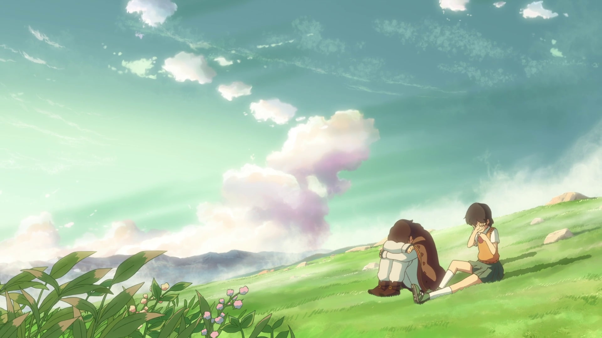
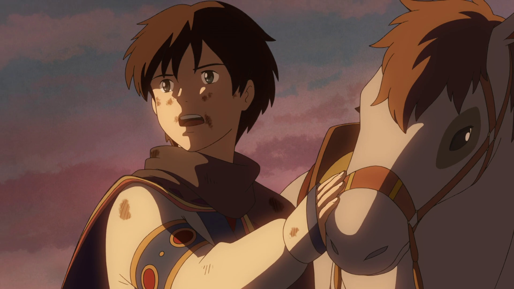
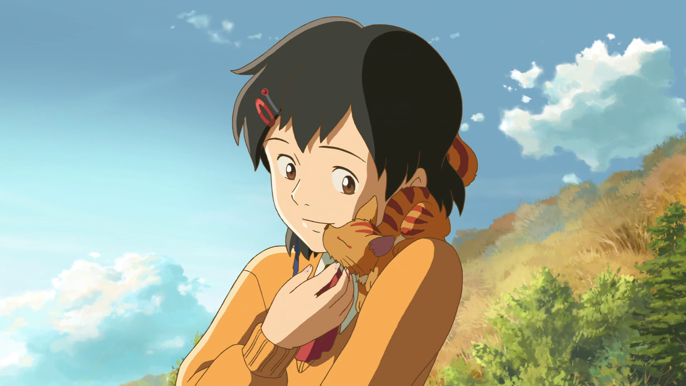
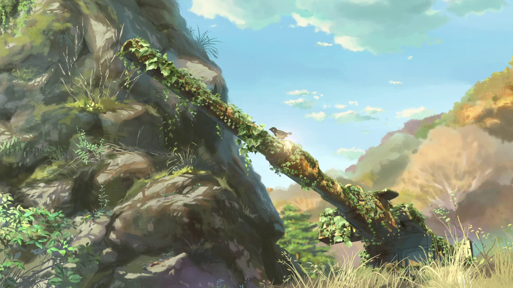
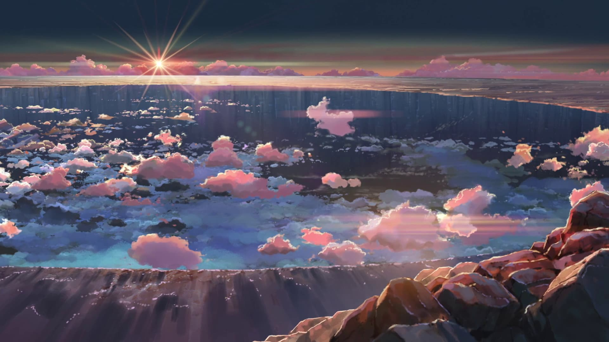
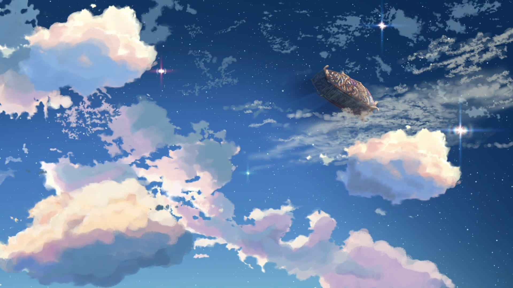

ジャンルの選択
ジャンルを選び、メニューから作品を選択してください。
星を追う子ども

Children who Chase Lost Voices from Deep Below
・作品紹介
🎬 作品概要
・公開日：2011年5月7日
・監督・原作・脚本：新海誠
・音楽：天門
・主題歌：熊木杏里「Hello Goodbye & Hello」
・制作会社：コミックス・ウェーブ・フィルム
📖 あらすじ
山間の町で母と暮らす少女アスナは、父の形見である鉱石ラジオから流れる不思議なメロディが忘れられずにいました。ある日、彼女は地下世界「アガルタ」からやってきた少年シュンと出会い、心を通わせます。しかし、シュンは突然姿を消してしまいます。
シュンとの再会を願うアスナの前に、シュンと瓜二つの弟シン、そして亡き妻を蘇らせるためにアガルタを目指す学校の教師モリサキが現れます。それぞれの想いを胸に、3人は伝説の地下世界へと旅立ちます。
👥 主な登場人物とキャスト
・渡瀬 明日菜（アスナ） ／ 声：金元寿子
本作の主人公。しっかり者だが、心に孤独を抱える少女。
・シュン / シン ／ 声：入野自由（一人二役）
地下世界アガルタの民。シュンは地上でアスナと出会い、シンはその実の弟。
・森崎 竜司（モリサキ） ／ 声：井上和彦
アスナの学校に赴任してきた国語教師。目的のために手段を選ばない一面を持つ。
・考察：キャラクターの心理と行動
登場人物たちの心理的変化や隠された動機、役割について(私なり)の解釈です。

【アスナの旅の真の目的】
アスナがアガルタへ向かったのは、シュンの復活を純粋に望んだからではなく、自身の根底にある「寂しさ」や「シュンの死」という現実から逃避するためであったと考えられる。

【アスナの成長と受容】
ミミとの別れ(の直後に亡くなる)や崖のシーンでの絶望を通じて、アスナは自分の弱さや本当の望みに気づく。最も直視したくなかった「寂しさ」という本心や「大切な人の死」を受け入れ、シンと共に大声で泣くことで、人間らしさを取り戻した。

【シンの自立と人間性の回復】
感情のない人形のように大人の言いなりになっていたシンも、初めて自分の意志で動き、兄の死を受け入れて涙を流したことで、自分らしい人生への第一歩を踏み出した。

【森崎先生との対比】
森崎先生は、過去（失ったもの）にすがり、現実逃避を続ける「成長できない大人」の象徴として描かれている。目の前にある命を大切にできない彼の姿は、現実を受け入れたアスナやシンと対極に位置している。

【ミミの役割】
ミミの死は単なる突然死ではなく、地上の空気による寿命が迫る中、迷えるアスナを正しい方向へ導くという役目を最後まで全うした結果であると推察される。

【"深層の失われた声を追う"ことの体現】
アスナの旅は、無自覚に抑圧していた「寂しい」という自身の心の声（失われた声）を見つけ出す旅であり、その声に気づいたからこそ、今を生きている母や日常を大切にする道を選べた。
・まとめ
『星を追う子ども』は、「死」という残酷な現実や、自身の奥底にある「寂しさ」から逃避していた子どもたちが、葛藤の末にそれらを受け入れ、自立していく成長の物語です。
物語は、「ないものにすがって現実から目を背ける大人（森崎先生）」と、「悲しみを受け入れ、今生きている人を大切にして生きる道を選ぶ子どもたち（アスナ・シン）」を対比させています。
本作はただの冒険劇ではなく、自身の心の内側（深層）にある弱さと向き合い、困難な現実のなかで正しく生きる強さを獲得する過程を描いた奥深い作品です。
作品 A-2：コンテンツレイアウトのテスト
【画像の右に文字】
画像左側テキスト右。
【画像の左に文字】
画像右側テキスト左。
作品 A-3
ここに作品A-3の本文が入ります。
作品 B-1
【幅広画像の下に文字】
このセクションでは、横幅いっぱいの画像を表示し、その下にテキストが続きます。
【画像の右に文字】
PCなどの広い画面では、画像が左側に配置され、テキストがその右側に回り込むように表示されます。
【画像の左に文字】
PCではCSSの `flex-direction: row-reverse;` を使って、HTMLの記述順を逆転させて表示しています。
作品 B-2

【画像の右に文字】
画像左側テキスト右。

【画像の左に文字】
画像右側テキスト左。
作品 C-1

【幅広画像の下に文字】
横幅画像。
作品 D-3
ここに作品D-3の本文が入ります。
作品 D-3
ここに作品D-3の本文が入ります。
作品 E-1
ジャンルEの作品コンテンツです。
作品 E-2
ジャンルEの作品コンテンツです。
作品 F-1
ジャンルFの作品コンテンツです。